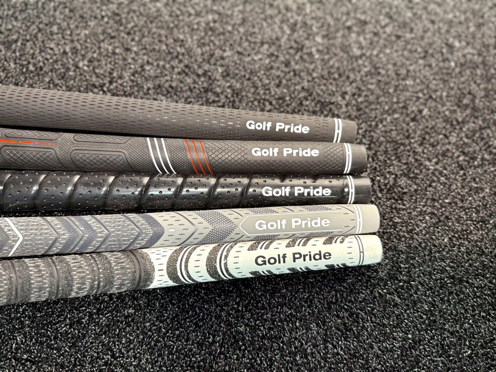

Independent recommendations
No brand endorsement or sales incentive determines the recommendation. The priority is the individual golfer.
Independent, educational, and built around the individual golfer — never around a sales target.
Every fitting begins with making you comfortable. We look at your goals, your current equipment, and how different heads, shafts, lengths, and specifications influence your performance. The experience is conversational, technical when needed, and full of education.
Sometimes the right outcome is a new club. Sometimes it's discovering that your current setup works, or learning what to look for next. Not every question is answered in a single session — and no purchase is required for a fitting to be worthwhile.
No brand endorsement or sales incentive determines the recommendation. The priority is the individual golfer.
Learn why different equipment choices matter and what changes are worth making.
Explore purpose-built TaylorMade and KBS Generation steel configurations with a fitting approach designed around development.
Junior Performance Fitting